完整球体 · 30秒夜间处置
原邮路出站 → 核验漂行纸影 → 折叠收容 → 携匣返回原仓库。飞船保持原轨道和尾焰，只有前轨搜照。
只读审核：普通玩法与原存档未替换。本页来自桌面原生触控仿真，视频按真实墙钟连续录制；尚不能替代 TapTap 手机实测。
原邮路出站 → 核验漂行纸影 → 折叠收容 → 携匣返回原仓库。飞船保持原轨道和尾焰，只有前轨搜照。
基础玻璃 → 黄铜灯座 → 邮政微景观 → 典藏舱。展柜形态逐级展开，台面锚点、收据中心与尺寸不变。
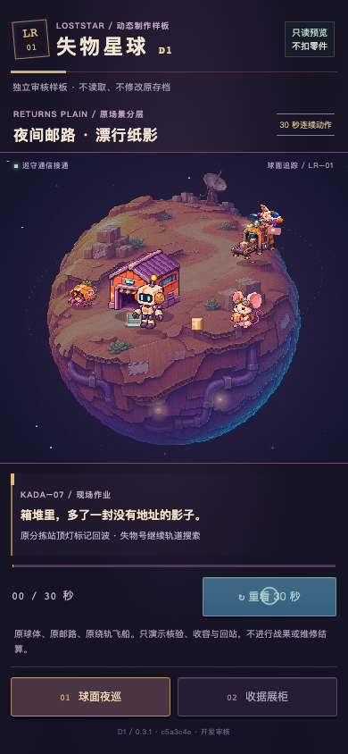
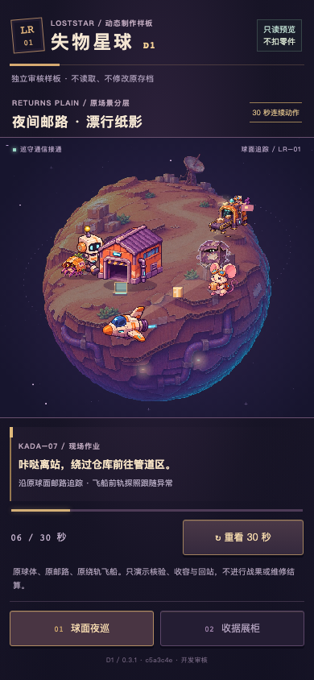
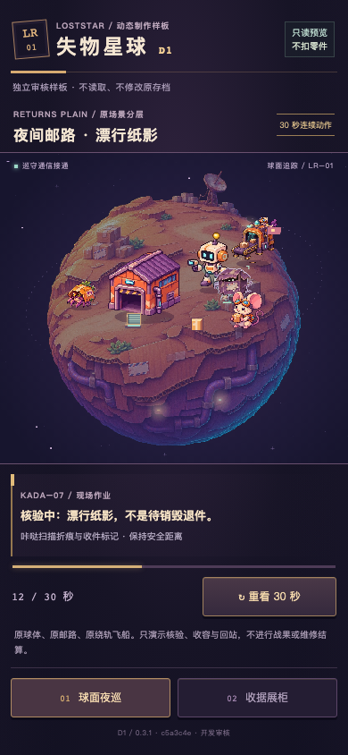
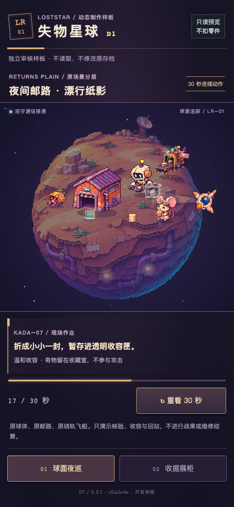
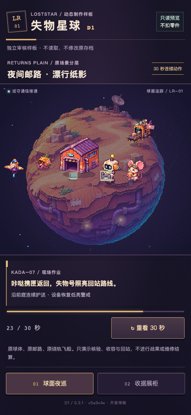
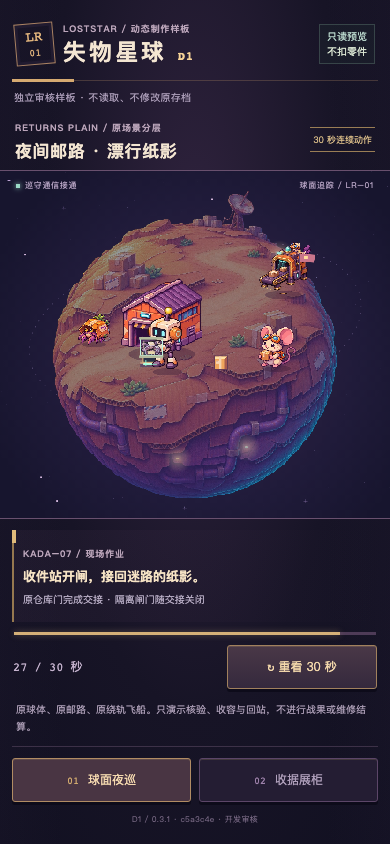
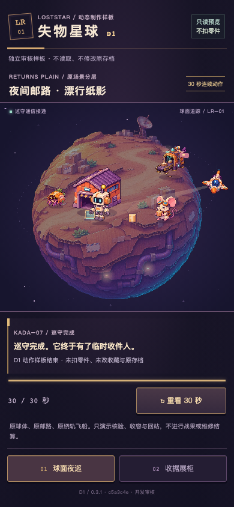
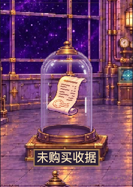
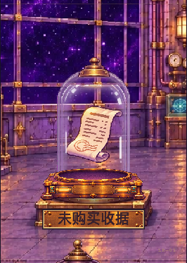
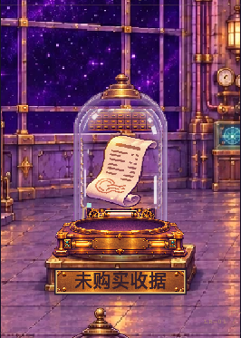
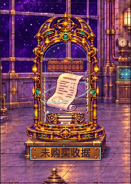
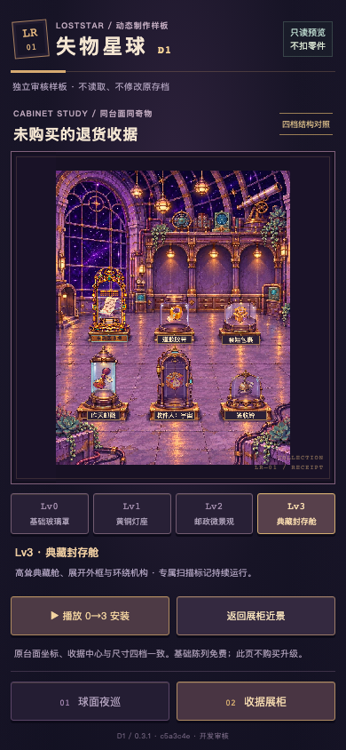
| 桌面引擎 | 窗口 / rAF帧 | rAF中位 / P95 | 实际场景平均绘制 |
|---|---|---|---|
| chromium | 6005ms / 361 | 16.70 / 16.80ms | 0.18ms |
| webkit | 6017ms / 362 | 17.00 / 18.00ms | 0.51ms |
这些是Apple M2 Pro上的浏览器触控仿真测量，不是手机性能、发热或 WebView 认证。正式昼夜、财务结算和三种异常扩展仍以后续审核为门槛。保留既有纸影图集，未伪称完成新物种美术。
所有独立上下文均验证合成旧存档/偏好字符串原样保留，Storage API访问计数为0；这不是读取用户真实存档。完整原始记录与构建信息 · 触控彩排 · 交互发现